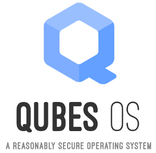

Dual-booting Qubes and Ubuntu with Encrypted Disks
Qubes is my preferred operating system, but occasionally you need to run something else. It’s hard to get certain hardware working the way you expect in Qubes, like webcams or non-disk USB devices. And Qubes VMs don’t support 3D acceleration, which you might occasionally need. You also can’t run VirtualBox inside of Qubes. You normally don’t have any reason to do this, except for very specific cases, like software development with Vagrant.
So here are instructions for how to dual-boot Qubes R2 rc1 and Ubuntu 14.04 LTS, using disk encryption for both. You should be able to adopt this same technique to dual-boot pretty much any two GNU/Linux distros with disk encryption. Keep in mind that if you’re booted into Ubuntu and you get owned, it’s possible for the attacker to then compromise Qubes. (You have to get really, really, really owned for an attacker who compromised Qubes to then compromise Ubuntu.)

The Operating System That Can Protect You Even if You Get Hacked
This was originally published on the Freedom of the Press Foundation’s blog.
We wrote about the importance of the Tails operating system to all of the NSA journalists last week, but there’s also another little-known operating system that journalists should consider using if they find themselves in high-risk scenarios. It’s called Qubes.
I’ve only been using Qubes for a few weeks, but I feel like my operating system is now a digital fortress. Let me try to explain why, and how Qubes differs from Tails.
Ubuntu is finally taking privacy seriously
Update: A couple people have pointed out that the privacy changes won’t actually take affect in 14.04, which means that fixubuntu.com will still be necessary until at least 14.10, which will be released in October. Oops.
In October 2012, Canonical made a horrible mistake. They included a “feature” in Ubuntu 12.10 that has been widely considered adware and spyware. I blogged about the new Ubuntu’s Amazon ads and data leaks for EFF at the time, with the main ask being that Dash’s online search should be an opt-in feature and not enabled by default.
Two really simple things Microsoft can do to make Windows more secure against NSA
Thanks to Edward Snowden and journalists at Der Spiegel, today we learned about Tailored Access Operations (TAO), NSA’s world-class hacking team. There was a lot of interesting information in that article (like how they divert shipping of electronics to a secret warehouse where they can modify it to install backdoors!).
But I’m just going to talk about how they use Microsoft error reports to gather private information about Windows computers that can be used to compromise their security — a problem that’s trivially easy for Microsoft to fix.
How Mailpile can implement opportunistic PGP email encryption
For those wanting to decentralize the Internet and encrypt all the things, Mailpile is a hot topic.
Leaving EFF and joining a fearless team of journalists
I started working at the Electronic Frontier Foundation in March of 2011. I joined the tech team as EFF’s first full-fledged web developer, eventually switching jobs internally to become a staff technologist. After over two and a half years of working with the most inspiring group of people I’ve ever met, I’m moving on to join a startup. Monday is my last day of work at EFF.
Canonical shouldn’t abuse trademark law to silence critics of its privacy decisions
I run the website fixubuntu.com, a place to quickly and easily learn how to disable the privacy-invasive features that are enabled by default in Ubuntu.
This morning I received this email from an employee of Canonical Limited, the company that owns and manages the Ubuntu project:
HTML email, attachments, and flowed text in Enigmail
I’ve noticed that a lot of people who are new to GPG really don’t want to give up their HTML email, but the Enigmail setup wizard recommends that you do this.
Don’t Succumb to Security Nihilism
You might have read today’s shocking Guardian and New York Times articles outlining the many ways that NSA and GCHQ have defeated crypto on the Internet, and have influenced tech companies to insert back doors into their commercial security products.
It’s 2013. We’re all being spied on. Why do security software websites not use HTTPS?
Update: This post made the frontpage of reddit and many of the comments are wrong. I took a moment to clear a couple things up at the bottom of the post.
We desperately need to work towards deprecating HTTP and replacing it only with HTTPS. The web is a huge part of what billions of people use the Internet for, and still most of it is not encrypted. Since the Snowden leaks started getting published we’ve learned that NSA and GCHQ spy on as close to the entire Internet as they can get.
It would be naive to think that the US and UK are the only governments doing this too. The network isn’t safe, and the only way to make it safe is to encrypt all the things. Websites that still use HTTP are putting users in danger. Here are a couple of examples.